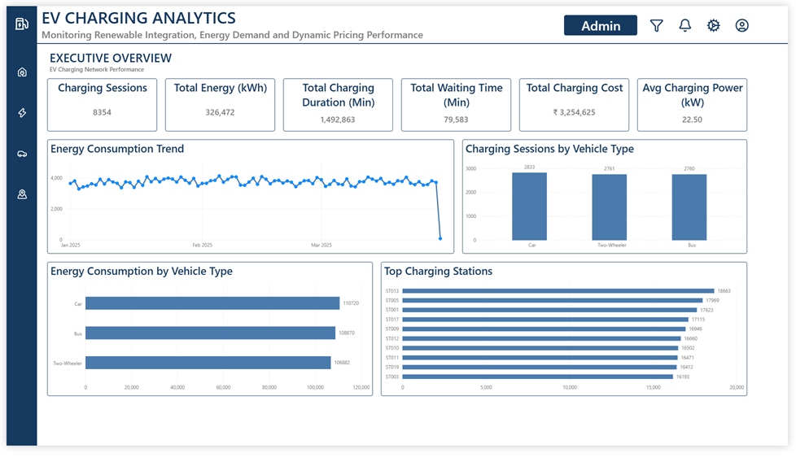
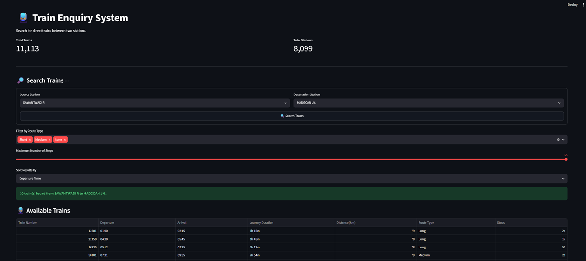
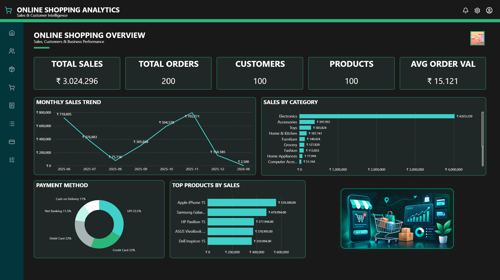
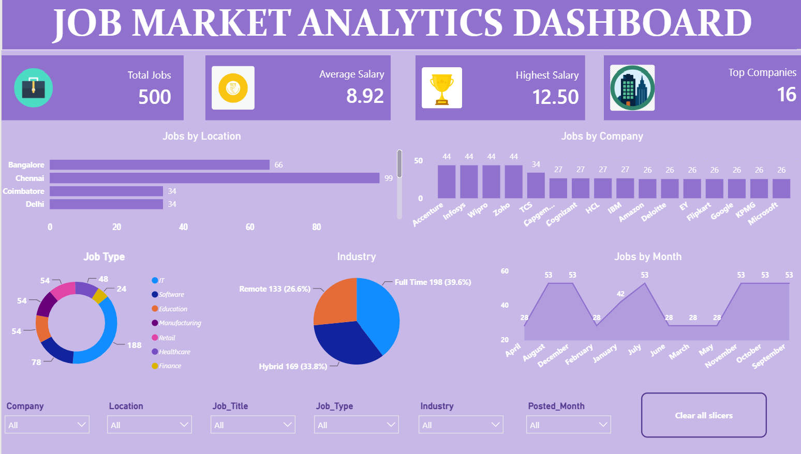
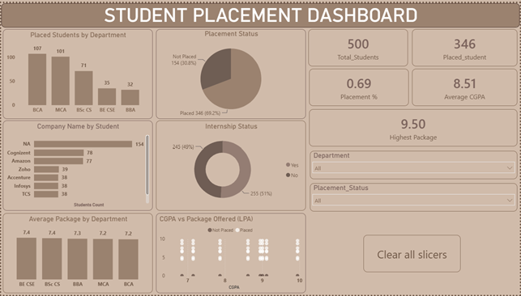
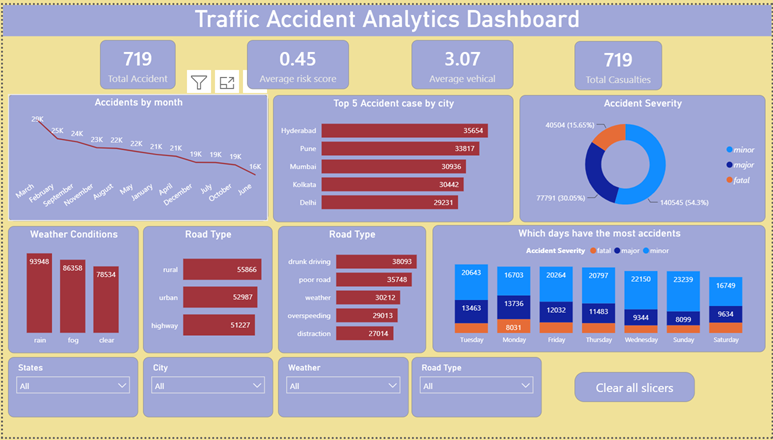

Trust the data
Clean, validate and organize data before drawing conclusions.
I’m Edwin Aldrin, an Associate Data Analyst at Arcadia. I clean, validate and analyze data to uncover patterns, communicate insights and support smarter business decisions.
Figures reflect the datasets and analyses described in my projects.
01 / ABOUT
I enjoy making messy data more useful — from checking data quality to finding trends and building reports people can act on.
With a BCA degree and hands-on experience in data analysis, I work with Excel, SQL, Power BI, Python and Snowflake. My approach combines careful validation, structured analysis and clear communication.
Clean, validate and organize data before drawing conclusions.
Use formulas, queries and analysis to surface useful patterns.
Turn results into concise summaries, visuals and reports.
02 / EXPERIENCE
Arcadia Current role
BDreamz Global Solutions
03 / TOOLKIT
Data preparation, analysis and reporting.
Query, aggregate and organize structured data.
Build interactive dashboards and KPI reporting.
Support exploration and data transformation.
04 / SELECTED WORK
Explore all nine projects across business intelligence, Excel, SQL, Python and data visualization.

PROJECT 01ENERGY ANALYTICSAnalyzed EV charging sessions, energy consumption, charging cost, waiting time, vehicle, charger and station performance.

PROJECT 02PYTHON · STREAMLITAnalyzed 11,113 train records across 8,099 stations to evaluate routes, journey duration, distance, stops and station-level patterns.

PROJECT 03E-COMMERCE ANALYTICSAnalyzed 185 orders, 100 customers and 100 products to evaluate sales, customer behavior, product demand and payment trends.
 PROJECT 04CONTENT ANALYTICS
PROJECT 04CONTENT ANALYTICS
Analyzed 8,806 Netflix titles, including 6,130 movies and 2,676 TV shows, to identify content distribution and trends.
 PROJECT 05DATABASE DESIGN
PROJECT 05DATABASE DESIGN
Designed a relational online shopping database with six interconnected tables for customers, products, carts, orders, order items and payments.

PROJECT 06WORKFORCE ANALYTICSAnalyzed 500 job records across 16 companies, 10 locations and 7 industries to identify job demand, hiring patterns, salary trends and employment opportunities.

PROJECT 07EDUCATION ANALYTICSAnalyzed 500 student records across five departments and seven hiring companies to evaluate placement performance and salary outcomes.

PROJECT 08PUBLIC SAFETY ANALYTICSAnalyzed and cleaned 719 traffic accident records using Python and exploratory data analysis to identify patterns in severity, causes, weather, road conditions and casualties.
 PROJECT 09SALES ANALYTICS
PROJECT 09SALES ANALYTICS
Analyzed 2,823 sales records across 19 countries and 73 cities, evaluating sales performance, order quantity, pricing, profit, customers, products and geographic trends.
Project metrics and descriptions are based on the details provided for each project. Update generic GitHub profile links with direct repository links when available.
05 / RESUME
EDWIN ALDRIN P
Data Analytics · BCA Graduate · Chennai, India
MY RESUME
View the full resume for my professional summary, work experience at Arcadia and BDreamz Global Solutions, technical skills, project details, education and certifications.
06 / LEARNING & ACHIEVEMENTS

Besant Technologies · Certificate of completion · 09 October 2024.
View certificate ↗
Infosys Springboard / Naan Mudhalvan.
View certificate ↗
SmartBridge · IBM SkillsBuild / Naan Mudhalvan.
View certificate ↗Thanthai Periyar Government Arts and Science College, Trichy.
07 / CONTACT
Have a project idea, a question about my work, or want to connect professionally? I’d be happy to hear from you.